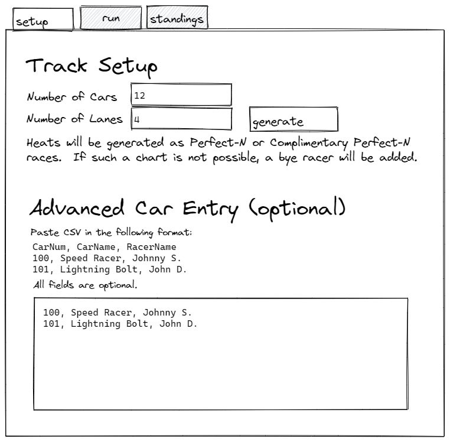
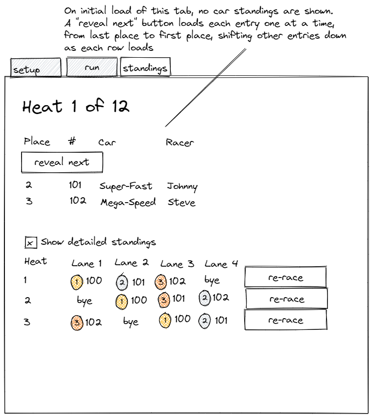

Racing Web is an online tool for generating race schedules, and running the races live from a computer or smartphone.

This generator attempts to accomplish the following (in priority order) for a points-based derby.
The default race generation method is a simple left rotation, as shown in the following 9 car, 3 lane schedule:
1 2 3
2 3 4
3 4 5
4 5 6
5 6 7
6 7 8
7 8 9
8 9 1
9 1 2
The heats are then re-ordered (if possible) to prefer a sequence where cars are not racing in sequential heats. This is primarily a benefit to the race operators, but also helps somewhat shuffle cars throughout the duration of the race improving racer engagement.
1 2 3
4 5 6
7 8 9
2 3 4
5 6 7
8 9 1
3 4 5
6 7 8
9 1 2
However, importing a pre-generated race will also be supported in a future version. This will allow for races generated by Young and Pope Perfect-N Chart Generator to be used.
See generated doxygen reference
This project is built on Wt, which (at least to me) is somewhat difficult to manage in Windows. Therefore, this project targets mainly Linux hosts. The primary target is Ubuntu 20.04 AMD64, though if other architectures and target environments are feasible, pull requests to improve compatibility are always welcome.
# download source
git clone --recurse-submodules https://github.com/ckxng/racingweb.git
cd racingweb
# Wt and dependencies
./.devcontainer/install.sh
# generate makefiles
cmake .
# compile racingweb
make
# run racingweb
./racingweb --docroot ./docroot/ --http-listen localhost:8080



Copyright (c) 2022 Cameron King.
Dual licensed under MIT and GPLv2 with OpenSSL exception.
See LICENSE for details.
In short, I prefer more permissive licenses, so the code specifically related to this project is released under the MIT license. This would allow any future developer to take portions of this project code and incorporate it into another project under the MIT license terms. However, since Wt has been released under the GPLv2 license with an OpenSSL exception, anyone who wishes to distribute binaries linked to the Wt libraries must do so under the terms of the GPLv2.